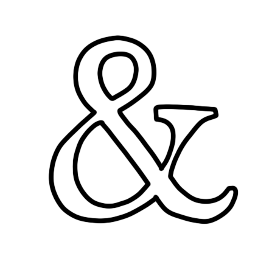

Mar Masó
Desde Barcelona, trabajo en la gestión de proyectos, la coordinación de contenidos y la edición fotográfica y de vídeo.
Me gusta conectar organización y creatividad, cuidando cada detalle del proceso para transformar material visual en narrativas claras y significativas.
Mis proyectos:
EDICIÓN DE FOTOGRAFÍA

Ver más
Desde Barcelona, trabajo en la gestión de proyectos, la coordinación de contenidos y la edición fotográfica y de vídeo. Me gusta conectar organización y creatividad, cuidando cada detalle del proceso para transformar material visual en narrativas claras y significativas. Mis proyectos:

EDICIÓN DE VÍDEO
Ver más